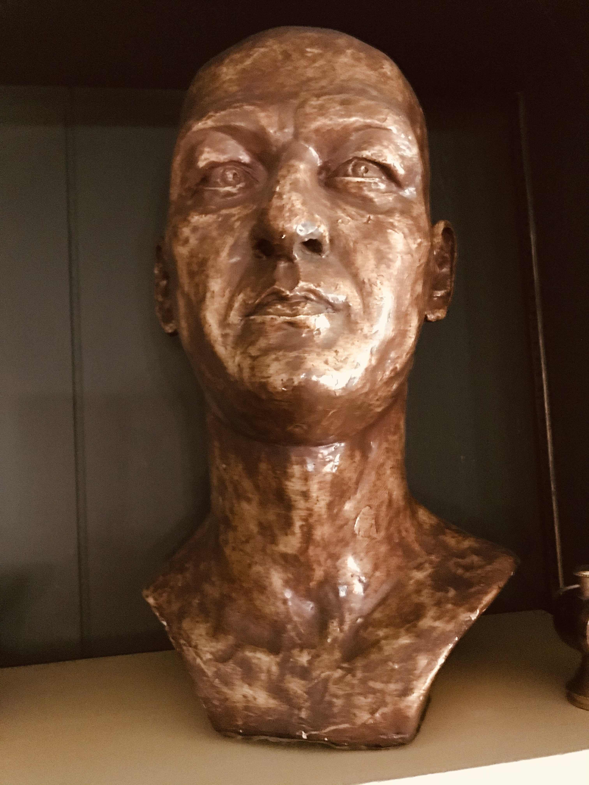
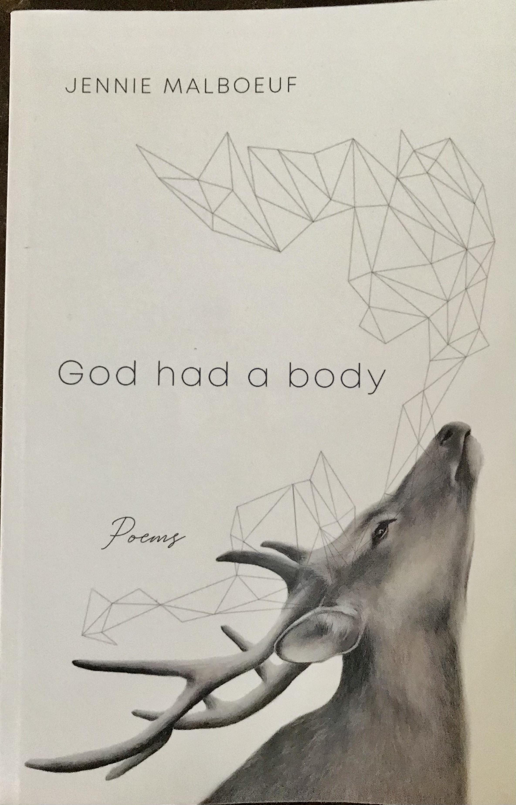
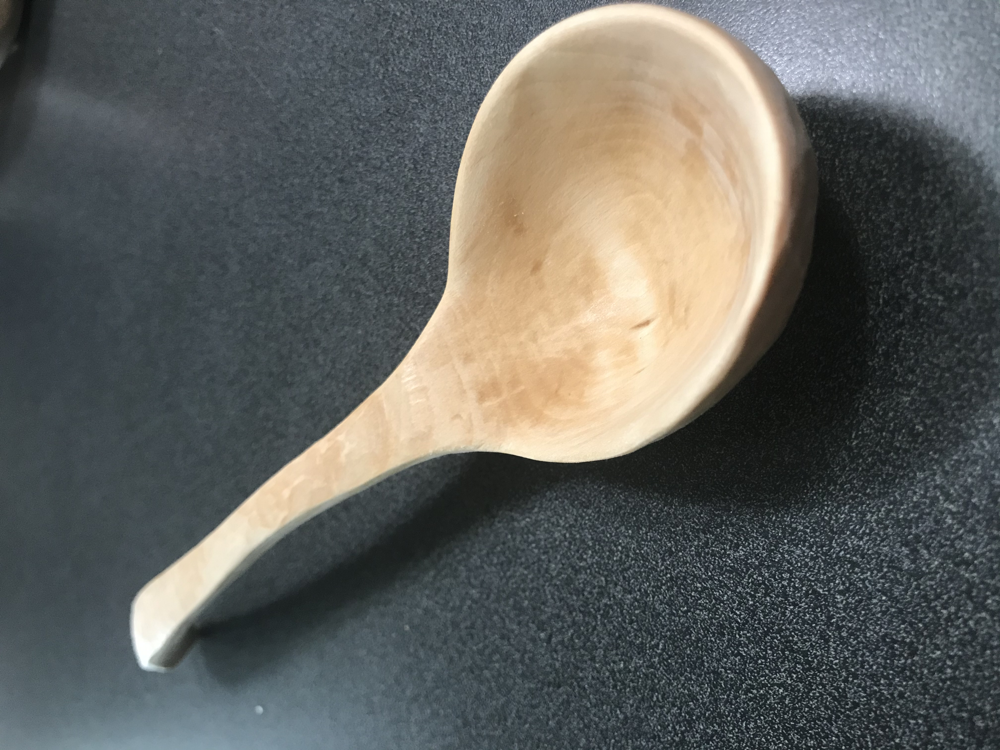

Use these buttons to navigate to a list of artists by category:
Kentucky's range of talents in the arts community is as diverse as its nature, culture and geography. Explore
the wealth of talented and gifted artisans that are a big part of what Kentucky can offer the world.

Bill Burton, a Kentucky native, is a self taught illustrator, painter, sculptor, and writer. Click
HEREto view Mr. Burton's work that is currently displayed at
the Land Between the Lakes nature preserve. Discover some of the famous places
where Mr. Burton's art is proudly displayed.

Jennie Malboeuf is a native of Louisville, Kentucky. Click
Here to learn about Ms's Malboeuf's award winning book. This is a test to
see if the margin shift when text is added to the subject. Now is the time for all good men to come to the aid of their
country.

Click to view the work of a master woodworker. This is a test to see if the box will expand with the
increase in word count. Now is the time for all good men to come to the aid of their country. Now is the time for all good men
to come to the aid of their country. Now is the time for all good men to come to the aid of their country.
Click to view the work of master watercolor artist, Helen Heddens. Click
Here to visit Ms Hedden's website, and view her award winning watercolor and oil paintings. This is a test to see if the box will expand with the
increase in word count. Now is the time for all good men to come to the aid of their country. Now is the time for all good men
to come to the aid of their country. Now is the time for all good men to come to the aid of their country.
Click to listen to the musical talent of Doctor Eliot Thompson. Click
Here to visit Doctor Eliot's "The Unlimited Show Band" website. This is a test to see if the box will expand with the
increase in word count. Now is the time for all good men to come to the aid of their country. Now is the time for all good men
to come to the aid of their country. Now is the time for all good men to come to the aid of their country.